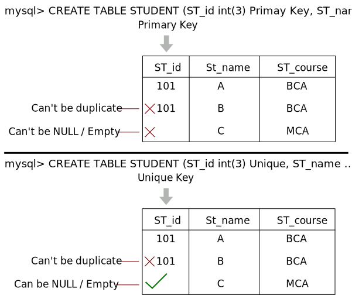

Relational Data Model and Relational Algebra
Introduction to Relational Model
- The relational model serves as the theoretical foundation for relational databases.
- At its core, the relational model of data is built on the concept of relations.
- A "Relation" is a mathematical concept that draws from set theory.
- The relational model was originally proposed by E.F. Codd for IBM in 1970 as a means to organize and manage data using relations or tables.
- In practical terms, the relational model defines how data is stored within relational databases.
These databases organize data into tables, also known as relations.
- Once the conceptual model of a database is designed using tools like Entity-Relationship (ER) diagrams, the next step is to convert this conceptual model into the relational model, which can then be implemented using various Relational Database Management System (RDBMS) languages.
- RDBMS languages encompass a range of software systems such as Oracle, SQL, MySQL, and more.
What is RDBMS?
- RDBMS stands for Relational Database Management System, and it forms the basis for SQL and most modern database systems, including MS SQL Server, IBM DB2, Oracle, MySQL, and Microsoft Access.
- An RDBMS is a type of Database Management System (DBMS) that is founded on the principles of the relational model, initially introduced by E.F. Codd.
- Popular RDBMS options today include:
- DB2 and Informix Dynamic Server (both from IBM)
- Oracle and Rdb (from Oracle Corporation)
- SQL Server and MS Access (from Microsoft)
Relational Model Concepts
- The relational model represents data in the form of tables, consisting of columns and rows.
- Each individual row within a table is referred to as a "tuple." For example, in a table named "Students," each row represents a student's information.
- Every column in a table has a specific name or attribute. In a table named "Employees," attributes might include "EmployeeID," "FirstName," and "LastName."
- Relation: A relation is essentially a table, characterized by its columns and rows. For instance, a "Products" table can be a relation.
- Attribute: An attribute is a named column within a relation. In a "Customers" table, "CustomerID" and "Email" are attributes.
- Domain: A domain represents the set of permissible values for one or more attributes. For instance, the domain for the "Gender" attribute in a "Persons" table could include values like "Male" and "Female."
- Tuple: A tuple, on the other hand, is a single row within a relation. In a "Orders" table, each order made by a customer is a tuple.
- Relation Schema: A relation schema specifies the name of the relation and its attributes. The schema for a "Books" table might include "BookID," "Title," and "Author."
- Relation Instance (State): A relation instance is a finite collection of tuples. For example, the current orders placed by customers in an "Online Orders" table represent the relation instance.
- Degree: Degree refers to the total number of columns or attributes present within a relation. If a "Vehicles" table has attributes like "Make," "Model," and "Year," its degree is 3.
- Cardinality: Cardinality is the total number of rows within a table, representing the size or extent of the relation. If there are 1000 products in a "Products" table, its cardinality is 1000.
- Relation Key: A relation key is one or more attributes within a row that can uniquely identify that row within the relation. In a "Students" table, "StudentID" can serve as the primary key.
- Tuple Variable: A tuple variable stores data corresponding to a record or row within a table. For instance, when querying a database, a tuple variable might be used to temporarily store and manipulate a specific row's data.
Properties of the Relational Model
- Unique Relation Names: In a relational database, each table (relation) must have a unique name. For example, you cannot have two tables both named "Customers."
- Unique Tuples (Rows): Within a relation, each tuple (row) must be unique, meaning there are no duplicate rows. This ensures that each row represents distinct data. For instance, if you have a "Students" table, each student's record should be unique.
- Uniform Data Domains: Entries in any given column must belong to the same domain. A domain defines the set of allowable values for an attribute. For instance, if you have a "Gender" column, all entries in that column should be either "Male" or "Female," ensuring data consistency.
- Unique Attribute Names: Each attribute (column) within a relation must have a unique name. This helps in unambiguously identifying and accessing specific attributes. For example, you cannot have two columns both named "DateOfBirth" in the same table.
- Order Independence: The order of columns or rows in a relation is irrelevant. Relations are considered unordered sets of data. This means you can retrieve and manipulate data without worrying about its physical storage order. For example, whether "Name" comes before "Age" in a table does not affect the data's integrity.
- Atomic Attribute Values: In the context of the relational model, "atomic" means that each cell (intersection of a row and column) of a relation contains exactly one value. Atomic attribute values are indivisible or cannot be further broken down into smaller parts. For instance, if you have an "Address" column, it should contain a single complete address, not components like street, city, and zip code separated into multiple cells.
Integrity Constraints over Relations
- Understanding Integrity Constraints: When we enter values into a table within a relational database, it's crucial to ensure that the data remains valid, accurate, and unique. To achieve this, we follow specific rules and conditions known as constraints. Integrity, in this context, refers to the maintenance of data accuracy and consistency, which is made possible by adhering to these sets of rules and constraints.
- Ensuring Data Accuracy: Integrity constraints play a pivotal role in guaranteeing the accuracy and consistency of data in a relational database.
- Rule-Based Guidelines: Integrity constraints are essentially sets of rules that a database is not allowed to violate. These rules serve as guidelines that govern the data within the database.
- Application to Attributes and Relationships: Constraints can be applied at the level of individual attributes or to the relationships between tables. They help maintain data integrity at both the micro and macro levels of the database.
- Preserving Data Consistency: Integrity constraints ensure that any changes made to the database, such as updates, deletions, or insertions, by authorized users do not result in a loss of data consistency. In other words, they act as safeguards against accidental damage to the database's integrity.
- Example: Consider a scenario where a database stores information about blood groups. An integrity constraint in this case could specify that the blood group attribute must contain values such as 'A,' 'B,' 'AB,' or 'O' only. Any other values would be considered invalid. This constraint ensures that the database maintains accurate and meaningful blood group data.
Types of Integrity Constraints
- Domain Constraint: Domain constraints are applied to attributes. They define the permissible values for an attribute. For example, an attribute "Age" may have a domain constraint specifying that it can only contain positive integers.
- Entity Integrity Constraint: Entity integrity constraints are also applied to attributes. They ensure that each tuple (row) within a relation has a unique identifier, often referred to as a primary key. This constraint guarantees that no duplicate rows exist within the relation.
- Referential Integrity Constraint: Referential integrity constraints come into play when establishing relationships between tables. They enforce the consistency of data between related tables. For example, when one table references another through a foreign key, referential integrity constraints ensure that the foreign key values match the primary key values in the referenced table, preventing orphans or invalid references.
- Key Constraint: Key constraints, similar to entity integrity constraints, are applied to attributes. They specify that a particular attribute or combination of attributes serves as a unique identifier for tuples within a relation. This unique identifier is often referred to as a candidate key or primary key.
Domain Constraints
- Defining Valid Attribute Values: Domain constraints play a crucial role in defining the permissible or valid set of values for an attribute within a relational database. For example, if you have an attribute like "Age," the domain constraint might specify that valid values must be positive integers. Similarly, for an attribute like "Name," the domain constraint might define that valid values are characters from 'A' to 'Z,' excluding numbers or other special characters.
- Range of Data Types: The data type of a domain can encompass a wide range of possibilities, including strings, characters, integers, times, dates, currencies, and more. It's essential to ensure that any value assigned to an attribute falls within the defined domain for that attribute.
- Defining During Table Creation: Domain constraints are typically established when defining the structure of a table. When creating a table, database designers specify the data types and constraints for each attribute, ensuring that data integrity is maintained throughout the database's lifecycle.

Entity Integrity Constraints
- Ensuring Primary Key Not Null: Entity integrity constraints play a fundamental role in ensuring that the primary key value within a relational database cannot be null. The primary key serves as a unique identifier for individual rows within a relation, and if it were allowed to have null values, it would compromise our ability to distinguish and identify those rows accurately.
- Importance of Identifiable Rows: Consider a scenario where you have a table storing information about employees, and the "EmployeeID" is the primary key. If the "EmployeeID" field could have null values, it would become impossible to uniquely identify and differentiate employees. Entity integrity constraints address this issue by mandating that primary keys must always contain a valid, non-null value.
- Null Values in Non-Primary Key Fields: While entity integrity constraints prohibit null values in primary key fields, it's important to note that tables can still contain null values in other non-primary key fields. This allows flexibility in representing missing or unknown information for certain attributes without affecting the uniqueness and integrity of the primary key.
Referential Integrity Constraints
- Definition and Scope: Referential integrity constraints are rules specified between two tables within a relational database.
- Enforcement Through Foreign Keys: These constraints come into play when a foreign key in one table references the primary key of another table. This ensures that relationships between tables are maintained accurately.
- Key Principle: In the context of referential integrity constraints, when a foreign key in Table 1 references the primary key in Table 2, it dictates that every value of the foreign key in Table 1 must either match an available primary key value in Table 2 or be null.
- Rules for Referential Integrity:
- Deletion Restriction: You cannot delete a record from a primary table if matching records exist in a related table. This safeguard prevents accidental data loss in related tables due to deletion in the primary table.
- Modification Allowance: You can change the primary key value in the primary table, even if it has related records. This flexibility allows for updates without breaking referential integrity.
- Insertion Validation: You cannot insert a value in the foreign key field of the related table if that value does not exist in the primary key of the primary table. This constraint ensures that relationships between tables are based on valid and existing data.
- Null Values for Unrelated Records: However, you can enter a null value in the foreign key field, signifying that the records are unrelated. This accommodates scenarios where a record in one table may not have a corresponding entry in another table.
Key Constraints
- Understanding Candidate Keys: An entity set within a relational database can have multiple keys known as candidate keys or minimal superkeys. However, from these candidates, one key is chosen to be the primary key.
- Role of Key Constraints: Key constraints are rules that apply to the primary
key of any relation. These rules ensure that:
- Uniqueness: All values within the primary key must be unique. This uniqueness is essential to distinguish individual rows within the relation accurately.
- Non-Null Values: The primary key must not contain null values. Null values would undermine the key's ability to uniquely identify rows.
Keys in DBMS
- A key is a value that can always be used to uniquely identify an object instance.
- A key is used to uniquely identify any record or row of data in a table.
- It is also used to establish and identify relationships between tables.
- For example: "ID" is used as a key in the student table because it is unique for each student. In the person table, "passport number" and "license number" are keys since they are unique for each person.
Super Key
- A super key is a set of one or more attributes that, when taken collectively, allow us to uniquely identify an entity in the entity set.
- For example, in the student table with attributes (S_rollno, S_name, S_branch, S_year):
- Super key → S1 → S_rollno, S_name
S2 → S_rollno, S_branch
S3 → S_rollno, S_year
S4 → S_rollno, S_name, S_branch
S5 → S_rollno, S_branch, S_year
- Super key → S1 → S_rollno, S_name
Candidate Key
- The minimal set of attributes that can uniquely identify a tuple is known as a candidate key.
- A candidate key can be defined as the minimum number of super keys that identify the record uniquely.
- It must contain unique values.
- Every table must have at least a single candidate key.
- For example, in the student table with attributes (S_rollno, S_name, S_branch, S_year):
- Candidate key → C1 → S_rollno
C2 → S_rollno, S_name
- Candidate key → C1 → S_rollno
Composite Key
- Whenever a primary key consists of more than one attribute, it is known as a composite key.
- For example, in the student table with attributes (S_rollno, S_id, S_name, S_branch):
- Composite key → S_rollno, S_id
RDBMS (Relational Database Management Systems) use key constraints to define rules and restrictions on data stored in database tables. These constraints ensure data integrity and maintain consistency within the database. Here are some key constraints commonly used in RDBMS:
In types of Key constraints we have :
- Primary Key
- Unique Key
- Foriegn Key
- Null
- Not Null
- Check
- default
Primary Key & Unique Key
-
Primary Key: A primary key is a unique key that serves as a unique identifier
for each record in a database table. Key characteristics of a primary key include:
- It cannot be NULL: A primary key must always have a value for each record. This ensures that each record in the table is uniquely identifiable.
- It cannot contain duplicate values: All values within the primary key column(s) must be unique across all records in the table. This uniqueness is essential for accurate record identification.
Primary keys play a crucial role in establishing relationships between tables in a relational database. They are used as references by foreign keys in related tables.
-
Unique Key: A unique key, also known as a unique constraint, is similar to a
primary key in that it enforces uniqueness within a column or combination of columns. However,
there's a key difference:
- It can have NULL values: Unlike a primary key, a unique key allows the presence of NULL values. This means that while it enforces uniqueness for non-NULL values, it permits multiple NULL values in the constrained column(s).
Unique keys are useful when you need to ensure the uniqueness of values within a column or set of columns, but you want to allow some flexibility by permitting NULL values in those columns.
Difference between Primary Key and Unique Key
-
Number of Keys: One significant difference between a primary key and a unique
key is the number of keys allowed in a table:
- Primary Key: A table can have only one primary key. The primary key uniquely identifies each record in the table, and it ensures that there are no duplicate values within the primary key column(s).
- Unique Key: In contrast, a table can have multiple unique keys. Each unique key enforces uniqueness within its respective column(s) but doesn't serve as the primary means of identifying records. This allows you to have different unique constraints on various columns or combinations of columns.
-
Null Values: Another key difference lies in how these keys handle null values:
- Primary Key: A primary key cannot contain null values. Every record in the table must have a unique and non-null value in the primary key column(s). This ensures a high level of data integrity and accurate record identification.
- Unique Key: On the other hand, a unique key can include null values. While unique key constraints enforce uniqueness for non-null values, they permit multiple null values within the constrained column(s). This offers some flexibility when dealing with data where certain values might be unknown or undefined.
Foreign Key
- A foreign key is a column whose values match the primary key of another table.
- It establishes a relationship between two or more tables at a time.
- Foreign keys act as cross-references between tables, ensuring referential integrity.
- Foreign keys are columns in one table that are used to point to the primary key of another table.

-- mysql format
--Creating a Foreign Key During Table Creation
-- Creating the parent table ST_REG
CREATE TABLE ST_REG (
ST_ID INT PRIMARY KEY,
-- Other columns
);
-- Creating the child table ST_FEE with a foreign key referencing ST_REG(ST_ID)
CREATE TABLE ST_FEE (
FEE_ID INT PRIMARY KEY,
ST_ID INT,
-- Other columns
FOREIGN KEY (ST_ID) REFERENCES ST_REG(ST_ID)
);
--Creating a Foreign Key During Table Creation
-- Creating the parent table ST_REG (if not already created)
CREATE TABLE ST_REG (
ST_ID INT PRIMARY KEY,
-- Other columns
);
-- Creating the child table ST_FEE without a foreign key initially
CREATE TABLE ST_FEE (
FEE_ID INT PRIMARY KEY,
ST_ID INT,
-- Other columns
);
-- Adding a foreign key constraint to the ST_FEE table
ALTER TABLE ST_FEE
ADD FOREIGN KEY (ST_ID) REFERENCES ST_REG(ST_ID);
Both primary keys and foreign keys serve important roles in database design:
- Primary keys are used to ensure attribute-level uniqueness in a table.
- Foreign keys are employed to establish relationships between tables, such as ensuring that only registered students can submit fees.
- They provide automatic restrictions and maintain data integrity.
Additional notes:
- The name of a foreign key in the child/referenced table can be different from that in the parent/primary table.
- You cannot change the data type or size of a foreign key in the child table; it should be of the same data type or larger than the primary key it references, but not smaller.
Problem:
- Redundancy: One of the primary issues with foreign keys is the potential for data redundancy. Since foreign keys can contain repeated data, this can lead to inefficiencies in storage and maintenance. For example, if you have a foreign key that references a student's ID in multiple rows of a table, you end up duplicating the same student ID multiple times. This not only wastes storage space but also increases the risk of inconsistencies and errors if the data is not properly maintained.
- Ambiguity: Foreign keys, unlike primary keys, can reference data that may change or be deleted. If a foreign key references a record in another table, and that record is modified or deleted, it can lead to ambiguity and integrity issues. For instance, if a foreign key references a student's ID, and that student's record is deleted, it may leave behind orphaned foreign key references that point to nonexistent records, causing confusion and potential errors in data retrieval and analysis.
- Performance Impact: The use of foreign keys can also impact database performance, especially when dealing with large datasets. The presence of foreign keys requires additional checks and validations during data insertion, updating, and deletion. While these checks are essential for maintaining data integrity, they can introduce overhead and slow down database operations, particularly in complex queries.
- Data Consistency Challenges: Foreign keys rely on the accuracy and consistency of the referenced data. If the referenced data contains errors or inconsistencies, it can lead to problems in the tables containing foreign key references. Ensuring data consistency between related tables can be challenging and may require careful management and validation processes.
- Complexity in Querying: When working with tables that have multiple foreign key relationships, constructing queries can become complex. Developers need to join tables based on foreign key relationships, which can lead to intricate SQL queries that are harder to read, maintain, and optimize.
Deletion of Record Problem
- Now suppose a student with ID = 1 leaves the college, and we need to delete their record from all related tables.
- However, if we attempt to delete it from the base table (parent), we'll encounter an integrity constraint violation, and it will display an error message: "You are violating the integrity constraints; remove the data from the child table first."
- Conversely, if we delete the record from the child table but forget to delete it from the parent table, we encounter a similar problem.
- When we query for the number of students, the child table may be empty, but the parent table still holds data, which is not ideal.
- Therefore, there should be a mechanism to ensure that data is deleted from all related tables.
- To achieve this, we use a concept called "ON DELETE CASCADE."
CREATE TABLE st_fee (
st_id INT(3),
-- Other columns
FOREIGN KEY (st_id) REFERENCES st_reg(st_id) ON DELETE CASCADE ON UPDATE CASCADE
);
- Now, when we delete a record from the parent table (st_reg), it will automatically be deleted from the child table (st_fee).
- The same principle applies to updating data; if we update data in one table, it will be updated in all related tables.
- Using these cascading actions is not mandatory, but it helps maintain data integrity in the database. Without them, you would need to use delete commands for all related tables manually.
- NULL Constraint: This constraint allows a column to contain null values, signifying that no value is assigned to it. For example, a "birthdate" column may allow null values for people with unknown birthdates.
- NOT NULL Constraint: The NOT NULL constraint specifies that a column must contain a value, and null values are not allowed. For instance, a "username" column in a user table should have a NOT NULL constraint to ensure that each user has a username.
- CHECK Constraint: The CHECK constraint defines a condition that data in a column must meet. For example, you can use a CHECK constraint to ensure that ages in a "customer" table are greater than or equal to 18, preventing the insertion of minors' data.
- DEFAULT Constraint: The DEFAULT constraint specifies a default value for a column when no value is explicitly provided during insertion. For instance, a "status" column in an order table may have a DEFAULT constraint set to "pending" so that new orders have the default status unless specified otherwise.
Examples:
1. NULL Constraint:
CREATE TABLE Employees (
EmployeeID INT PRIMARY KEY,
FirstName VARCHAR(50),
LastName VARCHAR(50),
Birthdate DATE,
Email VARCHAR(100) NULL -- Email can be null
);
2. NOT NULL Constraint:
CREATE TABLE Users (
UserID INT PRIMARY KEY,
Username VARCHAR(50) NOT NULL, -- Username cannot be null
Password VARCHAR(100),
Email VARCHAR(100)
);
3. CHECK Constraint:
CREATE TABLE Products (
ProductID INT PRIMARY KEY,
ProductName VARCHAR(100),
Price DECIMAL(10, 2) CHECK (Price >= 0), -- Price must be non-negative
StockQuantity INT CHECK (StockQuantity >= 0), -- Stock quantity must be non-negative
);
4. DEFAULT Constraint:
CREATE TABLE Orders (
OrderID INT PRIMARY KEY,
OrderDate DATE DEFAULT CURRENT_DATE, -- Default to the current date
CustomerID INT,
Status VARCHAR(20) DEFAULT 'Pending' -- Default to 'Pending' status
);
These key constraints ensure data consistency, reliability, and accuracy within the relational database, making it easier to manage and maintain data integrity.
Relational Query Language
- Relational database systems are expected to be equipped with a query language that assists its users in querying the database instances. This query language allows users to request information from the database, and one of the most commonly used query languages for this purpose is SQL (Structured Query Language).
- In essence, a query can be thought of as a "Retrieval Program" used to extract specific data from a database.
- Two Types of Query Language:
- Procedural Query Language
- Non-Procedural (or Declarative) Query Language
Procedural Query Language:
- In procedural query language, the user provides explicit instructions to the system on how to retrieve the data they require.
- The user not only defines what data should be retrieved but also specifies the exact steps and operations to achieve the desired results.
Non-Procedural (or Declarative) Query Language:
- In non-procedural query language, the user focuses solely on stating what data they want from the database.
- The user doesn't need to provide a detailed procedure or specify the operational steps; they simply declare their data retrieval requirements.
Both procedural and non-procedural query languages serve as powerful tools for interacting with relational databases, allowing users to retrieve and manipulate data according to their needs.
Two "Pure" Query Languages
-
There are two fundamental "Pure" Query languages or Mathematical Query Languages:
- Relational Algebra
-
Relational Calculus
- Tuple Relational Calculus
- Domain Relational Calculus
-
Understanding these languages is crucial for comprehending how database systems manage relational databases, as well as for gaining insights into how SQL functions.
-
Relational Algebra and Relational Calculus provide the theoretical foundation for query languages. SQL, on the other hand, is a practical implementation of these theories, enabling us to retrieve data from Relational Database Management Systems (RDBMS).
Relational Algebra vs. Relational Calculus
-
Relational Algebra:
- Relational algebra is a procedural query language.
- It is highly operational and is particularly useful for representing execution plans.
- Procedural in nature, it defines both what data is required and how to obtain that data.
-
Relational Calculus:
- Relational calculus includes Tuple Relational Calculus and Domain Relational Calculus.
- It is a non-procedural query language.
- Unlike relational algebra, it is not operational or declarative.
- In the calculus approach, queries specify what data is desired without specifying how to retrieve that data.
The Relational Algebra:
Basic Introduction
- The introduction of Relational Algebra marks the point where the complexity of Database Management Systems (DBMS) starts to increase.
What is the Concept of Relational Algebra?
- Relational Algebra is a procedural query language that employs a collection of mathematical 'operators' to construct queries.
- Procedural Query Language: In this type of language, every aspect of the query, including the steps and methods for data retrieval, must be explicitly defined.
How Does Relational Algebra Work?
-
Each query in Relational Algebra describes a step-by-step procedure for computing the desired answer.
The Relational Algebraic Operations can be categorized in several ways:
- Fundamental & Additional Operations
- Set-Oriented Operations & Relation-Oriented Operations
- Unary Operations & Binary Operations
Fundamental Operations
- Select (σ Sigma)
- Project (π Pi)
- Cross Product (X)
- Union (⋃ Union)
- Set Difference (-)
- Rename (ρ Rho)
Additional Operations
- Join (⊠)
- Set Intersection (⋂ Intersection)
- Division (÷;, /)
Set-Oriented Operations
- Union
- Intersection
- Set Difference
- Cross Product
Relation-Oriented Operations
- Select
- Project
- Division
- Join
- Rename
Unary Operations: When we use only a single table and apply operations
- Cross Product
- Set Difference
- Set Intersection
Binary Operations: When we use two tables
- Union
- Join
- Division
Relation Operations in Relational Algebra
-
Select (σ): Selects all tuples that satisfy the given selection condition from relation 'R'.
- For example, it can be used to retrieve all employee details working in an organization where the age is greater than 20 years.
- Mathematically represented as: σ <condition> (R)
-
Project (π): Produces a new relation with a subset of the attributes from 'R'.
- For instance, if you have a table with 20 attributes but you are interested in viewing only 2 of them, you would use the project operation.
- Mathematically represented as: π <attribute1, attribute2> (R)
-
Cross Product (X): Generates a relation that combines attributes from both 'R1' and 'R2,' including all possible combinations of tuples from 'R1' and 'R2'.
- Mathematically represented as: (R1 X R2)
-
Union (⋃): Produces a relation that includes all the tuples from either 'R1' or 'R2' (or both).
- Mathematically represented as: (R1 ⋃ R2)
-
Set Difference (-): Produces a relation that includes all the tuples in 'R1' that are not in 'R2'.
- Mathematically represented as: (R1 - R2)
-
Set Intersection (⋂): Generates a relation that includes all the tuples found in both 'R1' and 'R2'.
- Mathematically represented as: (R1 ⋂ R2)
-
Division (÷;): Used for queries involving concepts like 'For All' or 'Every.'
- Mathematically represented as: (R1 ÷; R2)
-
Rename (ρ): Used to assign a name to a relation obtained after applying any relational algebra operation.
- Mathematically represented as: ρ(R, E)
Select Operation (σ)
-
The select operation is used when we want to retrieve or display a particular set of tuples from a 'relation' based on certain conditions.
-
Syntax: σ <condition> (R)
Example:
STUDENT (R)
+---------+----------+-------+-----------+----------+
| S_ID | S_Name | S_Age | S_State | S_Course |
|---------+----------+-------+-----------+----------+
| 1 | Deepak | 25 | Delhi | B.Com |
| 2 | Rahul | 24 | Pune | B.Sc |
| 3 | Kapil | 30 | Delhi | B.Com |
| 4 | Sudesh | 22 | Bangalore | M.Sc |
| 5 | Varun | 29 | Pune | B.Com |
+---------+----------+-------+-----------+----------+
Query: Select * from student where S_Age > 25
-
Algebraic Representation: σ < S_Age > 25 > (STUDENT)
-
Output:
+---------+----------+-------+--------+----------+
| S_ID | S_Name | S_Age |S_State | S_Course |
|---------+----------+-------+--------+----------+
| 3 | Kapil | 30 | Delhi | B.Com |
| 5 | Varun | 29 | Pune | B.Com |
+---------+----------+-------+--------+----------+
Query: Select * from student where S_Age > 25 AND S_Age < 30
-
Algebraic Representation: σ < S_Age > 25 AND S_Age < 30 > (STUDENT)
We could also use : σ < S_Age > 25 ∧ S_Age < 30 > (STUDENT) -
Output:
+---------+----------+-------+---------+----------+
| S_ID | S_Name | S_Age | S_State | S_Course |
|---------+----------+-------+---------+----------+
| 5 | Varun | 29 | Pune | B.Com |
+---------+----------+-------+---------+----------+
Query: Select * from student where S_Age > 25 AND S_Course = "B.Com"
-
Algebraic Representation: σ < S_Age > 25 ∧ S_Course = "B.Com" > (STUDENT)
-
Output:
+---------+----------+-------+---------+----------+
| S_ID | S_Name | S_Age | S_State | S_Course |
|---------+----------+-------+---------+----------+
| 3 | Kapil | 30 | Delhi | B.Com |
| 5 | Varun | 29 | Pune | B.Com |
+---------+----------+-------+---------+----------+
Project Operation (π)
- It is used to retrieve particular set of attribute from a relation.
- Syntax: π < attribute > (R)
Example:
STUDENT (R)
+---------+----------+-------+-----------+----------+
| S_ID | S_Name | S_Age | S_State | S_Course |
|---------+----------+-------+-----------+----------+
| 1 | Deepak | 25 | Delhi | B.Com |
| 2 | Rahul | 24 | Pune | B.Sc |
| 3 | Kapil | 30 | Delhi | B.Com |
| 4 | Sudesh | 22 | Bangalore | M.Sc |
| 5 | Rahul | 29 | Pune | B.Com |
+---------+----------+-------+-----------+----------+
Query: Retrieve S_Age from STUDENT.
-
Algebraic Representation: π < S_Age > (STUDENT)
-
Output:
+-------+
| S_Age |
+-------+
| 25 |
| 24 |
| 30 |
| 22 |
| 29 |
+-------+
Query: Retrieve S_ID & S_Name from STUDENT.
-
Algebraic Representation: π < S_ID, S_Name > (STUDENT)
-
Output:
+---------+----------+
| S_ID | S_Name |
|---------+----------+
| 1 | Deepak |
| 2 | Rahul |
| 3 | Kapil |
| 4 | Sudesh |
| 5 | Rahul |
+---------+----------+
Query: Retrieve S_Name from STUDENT.
-
Algebraic Representation: π < S_ID, S_Name > (STUDENT)
-
Output:
+----------+
| S_Name |
+----------+
| Deepak |
| Rahul |
| Kapil |
| Sudesh |
+----------+
- There were two individuals with the name Rahul, so only one is shown; the duplicate one is removed.
Query: Retrieve S_Name, S_Id & S_Course from STUDENT Where S_Course = "B.Com".
-
Algebraic Representation: σ < S_Course = "B.Com" > (π < S_ID, S_Name, S_Course > (STUDENT))
-
Output:
+---------+----------+----------+
| S_ID | S_Name | S_Course |
|---------+----------+----------+
| 1 | Deepak | B.Com |
| 3 | Kapil | B.Com |
| 5 | Rahul | B.Com |
+---------+----------+----------+
Query: Retrieve S_Name, S_Id & S_Course from STUDENT Where S_Course = "B.Com".
-
Algebraic Representation: σ < S_Course = "B.Com" > (π < S_ID, S_Name, S_Course > (STUDENT))
-
Output:
+---------+----------+----------+
| S_ID | S_Name | S_Course |
|---------+----------+----------+
| 1 | Deepak | B.Com |
| 3 | Kapil | B.Com |
| 5 | Rahul | B.Com |
+---------+----------+----------+
Rename Operation (ρ)
- It is used to assign a name of 'our choice' to a new 'relation' obtained after applying any relational algebra operation.
- It is a unary operation, means we can only apply it on single table.
- Syntax: ρ(R, E)
- R: New relation name that we want
- E: Relational algebra operation expression
We want to retrieve S_Age and S_State column with new name = Student_details
ρ(Student_Details, π < A_Age, S_State > (STUDENT))
Output:
Student_Details
+-------+-----------+
| S_Age | S_State |
+-------+-----------+
| 25 | Delhi |
| 24 | Pune |
| 30 | Delhi |
| 22 | Bangalore |
| 29 | Pune |
+-------+-----------+
- Note: It is also used to rename Attributes.
- Now we want to retrieve S_Age and S_State but the name of these attributes should be Age and
State:
ρ(Student_Details(Age, State), π < S_Age, S_State > (STUDENT))
Student_Details
+-------+-----------+
| Age | State |
+-------+-----------+
| 25 | Delhi |
| 24 | Pune |
| 30 | Delhi |
| 22 | Bangalore |
| 29 | Pune |
+-------+-----------+
Union Operation (⋃)
- Union is a binary operation, requiring two tables to perform the operation.
- It treats relations as sets, eliminating duplicate values.
- It produces a new relation that includes all the tuples from either R1 or R2.
- Union Compatibility Conditions:
- Both relations must have the same number of attributes.
- The data types of corresponding attributes must be the same.
Employee Student
+-------+-----------+ +-------+-----------+
| E_ID | E_Name | | S_ID | S_Name |
+-------+-----------+ +-------+-----------+
| 1 | Deepak | | 6 | Sudesh |
| 2 | Rajesh | | 5 | Rahul |
| 3 | Deepak | | 2 | Deepak |
| 4 | Kapil | | 7 | Sanjay |
+-------+-----------+ | 9 | Deepak |
+-------+-----------+
Employee ⋃ Student
- The attribute names are selected from the first table in the expression, so here the attributes from the Employee table will be chosen.
Output:
+-------+-----------+
| E_ID | E_Name |
+-------+-----------+
| 1 | Deepak |
| 2 | Rajesh |
| 3 | Deepak |
| 4 | Kapil |
| 6 | Sudesh |
| 5 | Rahul |
| 7 | Sanjay |
| 9 | Deepak |
+-------+-----------+
π < E_Name > (Employee) ⋃ π < S_Name > (Student)
- Here, the attributes from the left table are selected.
Output:
+-----------+
| E_Name |
+-----------+
| Deepak |
| Rajesh |
| Kapil |
| Sudesh |
| Rahul |
| Sanjay |
+-----------+
Union Properties
- Commutative ⇒ R1 ⋃ R2 = R2 ⋃ R1
- Associative ⇒ R1 ⋃ ( R2 ⋃ R3 ) = (R1 ⋃ R2 ) ⋃ R3
- Distributive ⇒ ⇒ A ⋃ ( B ⋂ C ) = ( A ⋃ B ) ⋂ ( A ⋃ C )
Set Intersection Operation (∩)
- This operation is used to find the common tuples between two relations (R1 ∩ R2).
Compatibility Conditions:
- Both relations must have the same number of attributes.
- The data type of their corresponding attributes must be the same.
Employee Student
+-------+-----------+ +-------+-----------+
| E_ID | E_Name | | S_ID | S_Name |
+-------+-----------+ +-------+-----------+
| 1 | Deepak | | 6 | Sudesh |
| 2 | Rajesh | | 5 | Rahul |
| 3 | Deepak | | 2 | Deepak |
| 4 | Kapil | | 7 | Sanjay |
+-------+-----------+ | 9 | Deepak |
+-------+-----------+
(π < S_ID > (Student)) ∩ (π < E_ID > (Employee))
+-------+
| S_ID |
+-------+
| 2 |
+-------+
Now, if we also want to show the name column:
(π < E_Name > (Employee)) ∩ (π < S_Name > (Student))
+-----------+
| S_Name |
+-----------+
| Deepak |
+-----------+
Intersection Properties
- Commutative → R1 ∩ R2 = R2 ∩ R1
- Associative → R1 ∩ ( R2 ∩ R3 ) = (R1 ∩ R2 ) ∩ R3
- Distributive → A ∩ ( B ∪ C ) = ( A ∩ B ) ∪ ( A ∩ C )
Set Difference Operation (-)
- Set Difference is a binary operation that provides tuples from one relation but not in the other relation (R1 - R2). Essentially, it removes the common tuples from the first table in the expression.
Compatibility Conditions:
- Both relations must have the same number of attributes.
- The data type of their corresponding attributes must be the same.
Employee Student
+-------+-----------+ +-------+-----------+
| E_ID | E_Name | | S_ID | S_Name |
+-------+-----------+ +-------+-----------+
| 1 | Deepak | | 6 | Sudesh |
| 2 | Rajesh | | 5 | Rahul |
| 3 | Deepak | | 2 | Deepak |
| 4 | Kapil | | 4 | Kapil |
+-------+-----------+ | 9 | Deepak |
+-------+-----------+
Employee - Student
+-------+-----------+
| E_ID | E_Name |
+-------+-----------+
| 1 | Deepak |
| 2 | Rajesh |
| 3 | Deepak |
+-------+-----------+
- As (4, Kapil) was common, it was removed from the result.
(π < E_Name > (Employee)) - (π < S_Name > (Student))
+-----------+
| E_Name |
+-----------+
| Rajesh |
+-----------+
- Rajesh is the only name which is an employee but not a student.
Set Difference Properties:
- R1 - R2 ≠ R2 - R1
Cartesian Product (×)
- Cartesian Product is a binary operation used to combine two relations.
- This operation returns a third relation that contains all possible combinations of tuples from two relations.
Compatibility Conditions:
- There are no specific compatibility conditions for the Cartesian Product operation. It can be performed on any two relations regardless of their attributes or data types.
Example:
Table A Table B
+-------+-----------+ +-------+-----------+
| ID | Name | | Code | Category |
+-------+-----------+ +-------+-----------+
| 1 | John | | 101 | A |
| 2 | Alice | | 102 | B |
| 3 | Bob | | 103 | A |
+-------+-----------+ | 104 | C |
+-------+-----------+
Cartesian Product (A × B):
+-------+-----------+-------+-----------+
| ID | Name | Code | Category |
+-------+-----------+-------+-----------+
| 1 | John | 101 | A |
| 1 | John | 102 | B |
| 1 | John | 103 | A |
| 1 | John | 104 | C |
| 2 | Alice | 101 | A |
| 2 | Alice | 102 | B |
| 2 | Alice | 103 | A |
| 2 | Alice | 104 | C |
| 3 | Bob | 101 | A |
| 3 | Bob | 102 | B |
| 3 | Bob | 103 | A |
| 3 | Bob | 104 | C |
+-------+-----------+-------+-----------+
- The Cartesian Product combines all possible combinations of tuples from Tables A and B.
Cartesian Product Properties:
- Size of Result: The size of the resulting relation is the product of the sizes of the input relations.
- Associative: (A × B) × C = A × (B × C)
Division Operation (÷)
Concept:
Imagine you have two tables: "Customers" and "Orders." The "Customers" table contains
information
about different customers, and the "Orders" table keeps track of various orders made by those
customers.
Now, let's say you want to find customers who have ordered all available products. In other words, you want to identify customers who have ordered every product in your store.
This is where the Division operation comes in.
How Division Works
- You have two tables: "Customers" and "Orders."
- You perform the Division operation: "Customers ÷ Orders."
What Does the Result Show?
The result of "Customers ÷ Orders" will give you a list of customer IDs (or names) who have ordered every product.
Example
Customers Table:
+-----------+-----+
| CustomerID| Name|
+-----------+-----+
| 101 | John|
| 102 | Alice|
| 103 | Bob |
+-----------+-----+
Orders Table:
+---------+-----------+---------+
| OrderID | CustomerID| Product |
+---------+-----------+---------+
| 1 | 101 | A |
| 2 | 101 | B |
| 3 | 102 | A |
| 4 | 101 | C |
| 5 | 102 | B |
| 6 | 102 | C |
| 7 | 103 | A |
| 8 | 103 | B |
+---------+-----------+---------+
Now, if you perform "Customers ÷ Orders," the result will be a list of customer IDs who have ordered every product. In this case, it will be:
+-----------+
| CustomerID|
+-----------+
| 101 |
| 102 |
+-----------+
This tells you that both John (CustomerID 101) and Alice (CustomerID 102) have ordered every product available in the store.
Properties of Division
- Division is not commutative, which means the order of tables matters. "Customers ÷ Orders" is not the same as "Orders ÷ Customers."
- Division is not associative, which means the grouping of tables matters. "(Customers ÷ Orders) ÷ AnotherTable" is not the same as "Customers ÷ (Orders ÷ AnotherTable)."
Join Operation
Concept
The Join operation is used when you have two or more tables, and you want to combine them based on a common column or attribute. It helps you retrieve information from multiple tables by linking related data.
How Join Works
The Join operation combines rows from two or more tables based on a specified condition or matching column. This condition is typically defined using the equality operator (=), where the values in the specified columns must match for the rows to be included in the result.
Types of Joins
There are several types of Join operations in relational algebra, including:
- Inner Join: Retrieves rows that have matching values in both tables. Non-matching rows are excluded.
- Left Outer Join (or Left Join): Retrieves all rows from the left table and the matching rows from the right table. Non-matching rows from the left table will have NULL values for right table columns.
- Right Outer Join (or Right Join): Similar to Left Join but retrieves all rows from the right table and matching rows from the left table.
- Full Outer Join: Retrieves all rows when there is a match in either the left or right table. Non-matching rows from both tables will have NULL values for columns from the non-matching table.
- Cross Join (or Cartesian Join): Combines all rows from the left table with all rows from the right table, resulting in a Cartesian product.
Example
Let's consider two tables: "Employees" and "Departments." The "Employees" table contains information about employees, including their names and department IDs. The "Departments" table contains department names and corresponding department IDs.
Employees Table:
+-------+-----------+-----------+
| EmpID | EmpName | DeptID |
+-------+-----------+-----------+
| 1 | John | 101 |
| 2 | Alice | 102 |
| 3 | Bob | 101 |
| 4 | Carol | 103 |
+-------+-----------+-----------+
Departments Table:
+-------+------------+
| DeptID| DeptName |
+-------+------------+
| 101 | HR |
| 102 | Sales |
| 103 | Marketing |
+-------+------------+
Inner Join (Employees and Departments):
An Inner Join between the "Employees" and "Departments" tables on the "DeptID" column would result in:
+-------+-----------+-----------+------------+
| EmpID | EmpName | DeptID | DeptName |
+-------+-----------+-----------+------------+
| 1 | John | 101 | HR |
| 2 | Alice | 102 | Sales |
| 3 | Bob | 101 | HR |
| 4 | Carol | 103 | Marketing |
+-------+-----------+-----------+------------+
This Inner Join combines data from both tables where the "DeptID" values match. You get a result set that includes employee names and their corresponding department names.
Left Outer Join (Employees and Department):
Employees Table:
+-------+-----------+-----------+
| EmpID | EmpName | DeptID |
+-------+-----------+-----------+
| 1 | John | 101 |
| 2 | Alice | 102 |
| 3 | Bob | 101 |
| 4 | Carol | 103 |
+-------+-----------+-----------+
Departments Table:
+-------+------------+
| DeptID| DeptName |
+-------+------------+
| 101 | HR |
| 102 | Sales |
| 103 | Marketing |
| 104 | Finance |
+-------+------------+
Left Outer Join (Employees and Departments):
+-------+-----------+-----------+------------+
| EmpID | EmpName | DeptID | DeptName |
+-------+-----------+-----------+------------+
| 1 | John | 101 | HR |
| 2 | Alice | 102 | Sales |
| 3 | Bob | 101 | HR |
| 4 | Carol | 103 | Marketing |
| null | null | 104 | Finance |
+-------+-----------+-----------+------------+
In this Left Outer Join example, all rows from the "Employees" table are included in the result, along with matching rows from the "Departments" table. However, there's one additional row with null values in the "Employees" columns because there was no matching employee for the "Finance" department.
Right Outer Join Example:
Employees Table:
+-------+-----------+-----------+
| EmpID | EmpName | DeptID |
+-------+-----------+-----------+
| 1 | John | 101 |
| 2 | Alice | 102 |
| 3 | Bob | 101 |
| 4 | Carol | 103 |
+-------+-----------+-----------+
Departments Table:
+-------+------------+
| DeptID| DeptName |
+-------+------------+
| 101 | HR |
| 102 | Sales |
| 103 | Marketing |
| 104 | Finance |
+-------+------------+
Right Outer Join (Employees and Departments):
+-------+-----------+-----------+------------+
| EmpID | EmpName | DeptID | DeptName |
+-------+-----------+-----------+------------+
| 1 | John | 101 | HR |
| 2 | Alice | 102 | Sales |
| 3 | Bob | 101 | HR |
| null | null | 104 | Finance |
+-------+-----------+-----------+------------+
In this Right Outer Join, all rows from the "Departments" table are included in the result, along with matching rows from the "Employees" table. If there's no match for a particular department in the "Employees" table, the employee-related columns will contain null values.
Full Outer Join Example:
Employees Table:
+-------+-----------+-----------+
| EmpID | EmpName | DeptID |
+-------+-----------+-----------+
| 1 | John | 101 |
| 2 | Alice | 102 |
| 3 | Bob | 101 |
| 4 | Carol | 103 |
+-------+-----------+-----------+
Departments Table:
+-------+------------+
| DeptID| DeptName |
+-------+------------+
| 101 | HR |
| 102 | Sales |
| 103 | Marketing |
| 104 | Finance |
+-------+------------+
Full Outer Join (Employees and Departments):
+-------+-----------+-----------+------------+
| EmpID | EmpName | DeptID | DeptName |
+-------+-----------+-----------+------------+
| 1 | John | 101 | HR |
| 2 | Alice | 102 | Sales |
| 3 | Bob | 101 | HR |
| 4 | Carol | 103 | Marketing |
| null | null | 104 | Finance |
+-------+-----------+-----------+------------+
In this Full Outer Join example, all rows from both the "Employees" and "Departments" tables are included in the result. If there's no match for a particular department in the "Employees" table or if there's no match for a particular employee in the "Departments" table, the corresponding columns will contain null values.
Properties of Join
- The order of tables in the Join operation can affect the result. Swapping the order may yield a different result.
- The type of Join (Inner, Left, Right, Full, Cross) determines which rows are included in the result.
- Joins allow you to relate and combine data from multiple tables, making it a powerful tool in relational databases.
Relational Calculus
- Relational Calculus is a way to ask questions or retrieve data from a database.
- Imagine you have a database with lots of information, like a list of employees in a company. You might want to find specific employees, like those who are older than 30 or those who work in a particular department. Relational Calculus helps you express these questions.
- It's like asking a question in plain English and letting the database figure out how to find the answer. You don't need to specify the step-by-step process; you just describe what you want.
Key Points:
- Relational Calculus is an alternative to Relational Algebra, another way to interact with databases.
- In Relational Calculus, queries are expressed using variables and formulas. These queries describe what you want to retrieve from the database.
- It is non-procedural, meaning you don't have to specify how to get the data; you only define what data you need.
- Queries in Relational Calculus describe the properties of the desired result relation without specifying the steps to compute it. It's all about defining the result you want.
- Relational Calculus is based on predicate calculus, a mathematical system used to symbolize logical arguments.
So, when you use Relational Calculus, you're essentially telling the database what you're looking for, and it handles the behind-the-scenes work to find the information you need.
Relational Calculus Variants
Relational Calculus, as a query language used in database management, comes in two main variants, each with its unique approach to formulating queries:
- Tuple Relational Calculus: In this variant, variables take on tuple values. It allows you to specify conditions that the desired tuples must satisfy. Think of it as describing the specific rows you want from a database table based on certain criteria.
- Domain Relational Calculus: In contrast, Domain Relational Calculus involves variables that range over the underlying domains or data types. It focuses on specifying conditions for the attributes or columns of the tuples you want. This variant is more concerned with defining what attributes should possess certain properties.
Both Tuple and Domain Relational Calculus provide a declarative way to query databases, allowing users to state what they want from the database without detailing how to retrieve it. These variants have significantly influenced the development of query languages used in practice.
Influence on Query Languages
Relational Calculus has played a pivotal role in shaping the design of many query languages, including widely used ones like:
- SQL (Structured Query Language): SQL is one of the most popular database query languages, and it draws inspiration from both Tuple and Domain Relational Calculus. SQL allows users to retrieve and manipulate data in a relational database using a syntax that resembles natural language queries.
- QBE (Query by Example): QBE is another user-friendly database query language that simplifies the process of formulating queries. It is particularly known for its visual representation, where users can specify query conditions by example, making it accessible to users without extensive SQL knowledge.
These query languages, influenced by Relational Calculus, have made it easier for database users to interact with and retrieve data from relational databases, regardless of their technical expertise.